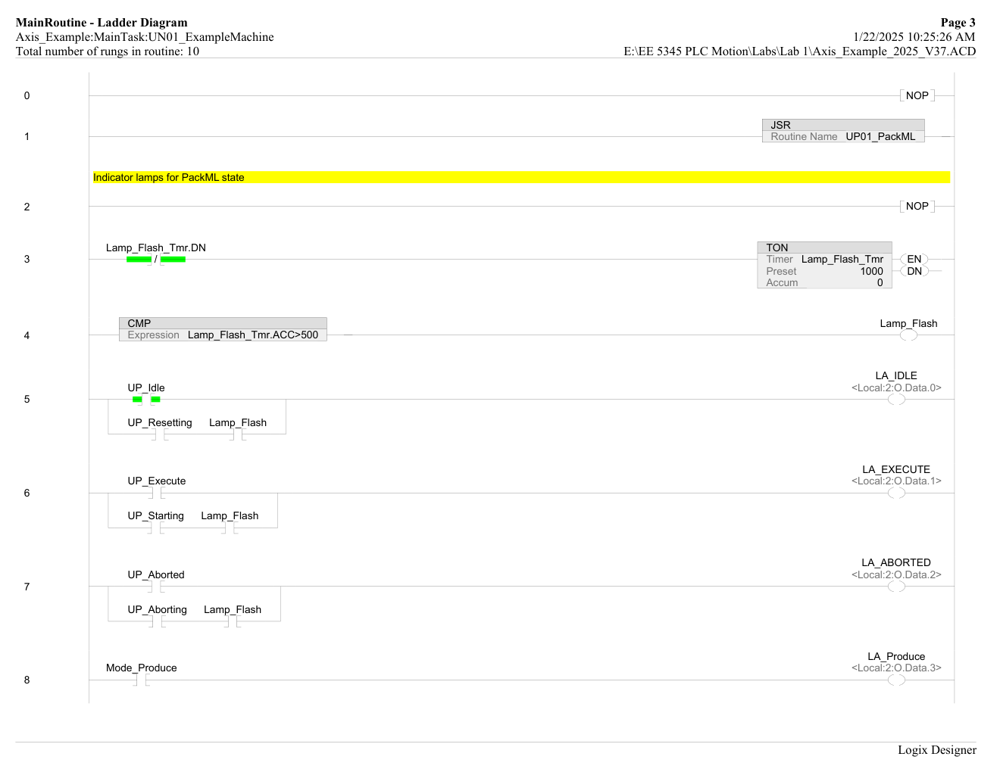
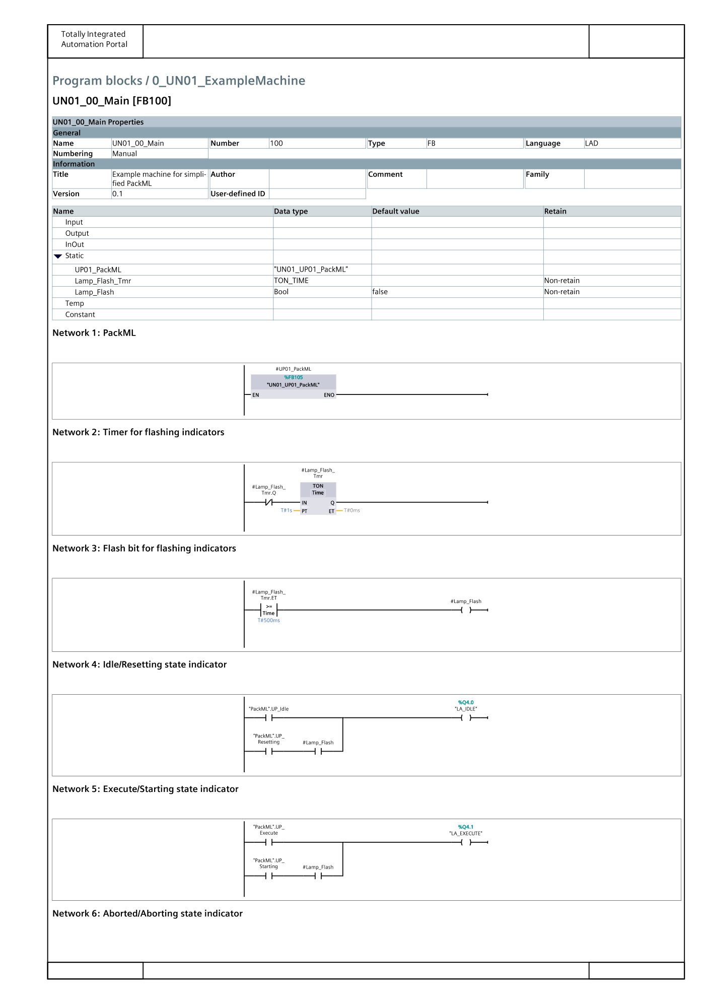

Same TON, different syntax.
A small but instructive cross-vendor detail: indicator lamps in PackML have to distinguish
steady states (Idle, Execute, Aborted) from transient states (Resetting,
Starting, Aborting). Both platforms solve it the same way — a 1 Hz TON ticking a
Lamp_Flash bit, then per-state output rungs that OR the steady-state bit with
the transient state AND Lamp_Flash. Different syntactic dressing, identical
logic.

UP01_PackML. Rung 3 self-resetting TON with Lamp_Flash_Tmr.DN on the rung condition (1000 ms preset). Rung 4 compares Lamp_Flash_Tmr.ACC > 500 to produce the 50 % duty Lamp_Flash bit. Rungs 5-7 drive LA_IDLE / LA_EXECUTE / LA_ABORTED on Local:2:O with the OR-pattern: steady state, OR transient state AND Lamp_Flash.
FB105 UN01_UP01_PackML. Network 2 holds the Lamp_Flash_Tmr TON_TIME instance (T#1s preset, self-resetting via #Lamp_Flash_Tmr.Q-NC). Network 3 compares Lamp_Flash_Tmr.ET >= T#500ms for the flash bit. Networks 4-6 drive Q4.0 LA_IDLE, Q4.1 LA_EXECUTE, etc. with the same steady-OR-transient&flash structure as Rockwell.Shared PackML data block — DB10
Where the Rockwell project uses program-scoped tags imported from the
Axis_Example_CLogix_PackML_Tags.csv, the Siemens project bundles every inter-FB
PackML signal into a single global data block, DB10 PackML. Every FB in both
the unit and equipment programs references this DB — it is what lets the
FB105 UP01_PackML on the unit side communicate state to every CM00 on the
equipment side without explicit InOut wiring.

Mode_Manual, Mode_Produce, UP_Idle, UP_Starting, UP_Execute, UP_Aborting, UP_Aborted, UP_Resetting) plus five Array[0..31] of Bool per-EM completion arrays (EM_Aborting_Done, EM_Execute_Done, EM_Resetting_Done, EM_Starting_Done, EM_MotionInstError) — one slot per equipment module instance, indexed by EM_Number.